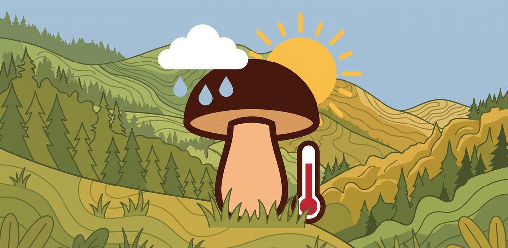
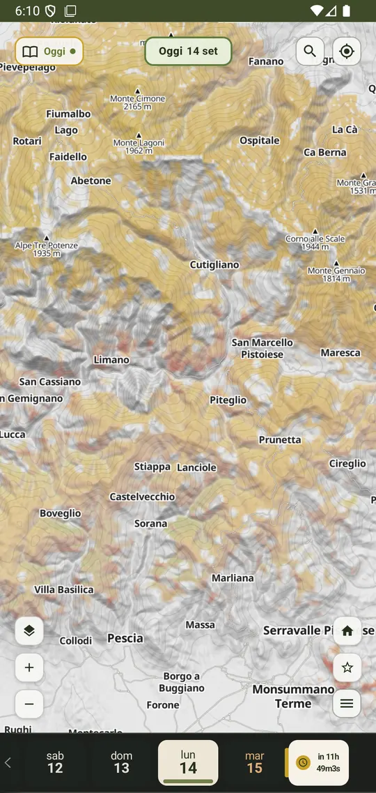
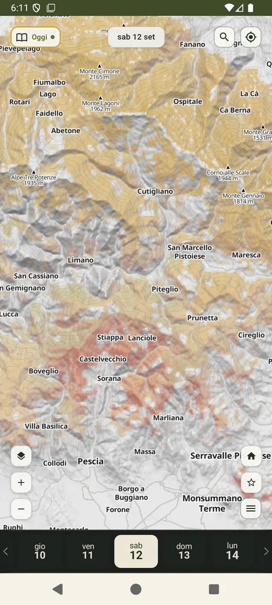
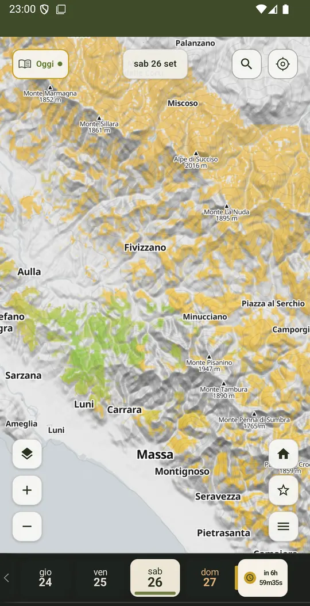

Giallo (Base)
le condizioni recenti hanno acceso il ciclo.
Mappa microclimatica dei versanti per funghi e porcini. Oggi Appennino toscano.
App in fase di test su Google Play.
Microclimate map of slopes for mushrooms and porcini. Tuscan Apennines today.
App currently in testing on Google Play.




Mappa microclimatica dei versanti: una griglia colorata sopra la carta con il rilievo, zona per zona.
Timeline di 7 giorni: scorri le giornate recenti e guarda come cambiano i colori.
Scheda della zona: tieni premuto su un punto della mappa per aprire la scheda con i dati di quel punto.
Localizza (facoltativo): trova dove sei sulla mappa, solo quando lo chiedi tu.
Aggiornata ogni giorno: la mappa del giorno arriva da sola sul telefono, anche senza accedere. Serve Internet.
Microclimate map of the slopes: a coloured grid over the map with relief, zone by zone.
7-day timeline: swipe recent days and watch how the colours change.
Zone card: long-press a point on the map to open the card with data for that spot.
Locate (optional): find where you are on the map, only when you ask.
Updated every day: the day’s map arrives on the phone by itself, even without signing in. Internet is required.
le condizioni recenti hanno acceso il ciclo.
il ciclo è andato avanti abbastanza da far ipotizzare funghi in terra. È un’ipotesi, non una certezza.
stress da secco, che frena la zona.
recent conditions have started the cycle.
the cycle has gone far enough to suggest fruiting in the ground. That is a hypothesis, not a certainty.
dry stress that holds the area back.
Appennino toscano, dove i colori vengono verificati sul campo. Il nome pensa a tutta l’Italia: altre zone arriveranno a tappe, quando il sistema sarà tarato anche lì. Fuori da quest’area vedi la carta, ma i colori non sono ancora il prodotto finito.
The Tuscan Apennines, where the colours are checked in the field. The name looks toward all of Italy: other areas will come in steps, when the system is tuned there too. Outside this area you still see the map, but the colours are not the finished product yet.
I colori sono stime empiriche del microclima: non sono una prova della presenza di funghi, non garantiscono il raccolto e non dicono nulla sulla commestibilità. Rispetta sempre regole locali, permessi di raccolta, proprietà private e divieti. Non mangiare funghi senza l’identificazione certa di personale qualificato.
The colours are empirical microclimate estimates: they are not proof that mushrooms are present, they do not guarantee a harvest, and they say nothing about edibility. Always respect local rules, picking permits, private property and bans. Do not eat mushrooms without certain identification by qualified people.